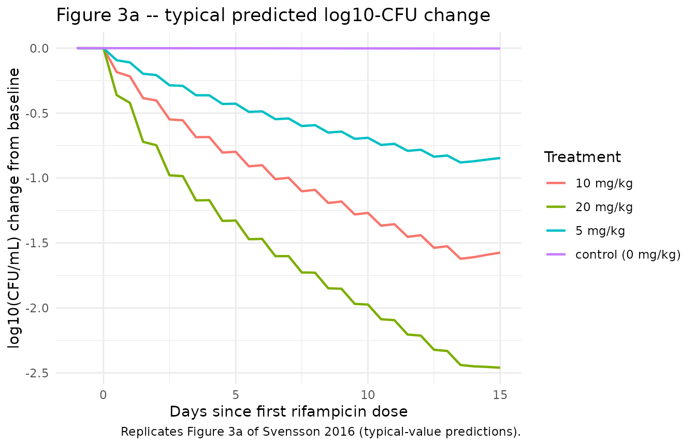
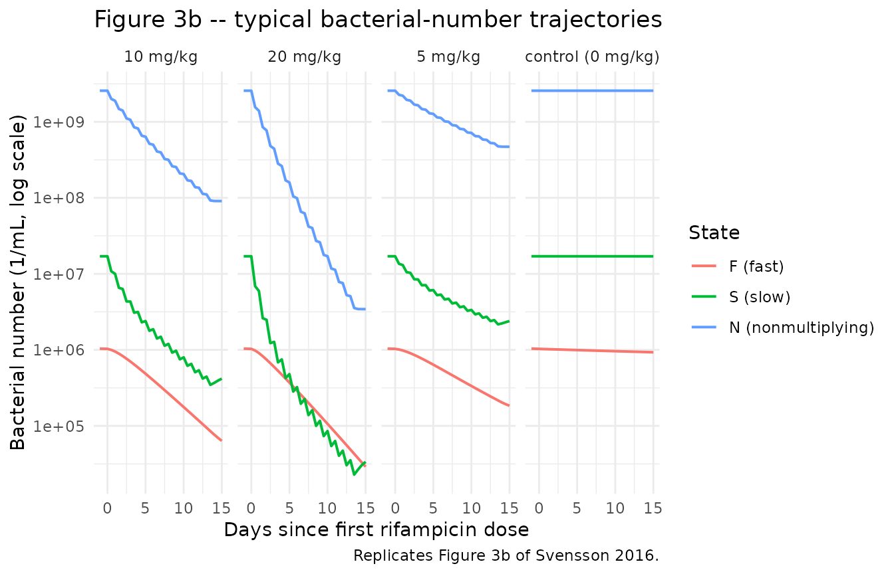
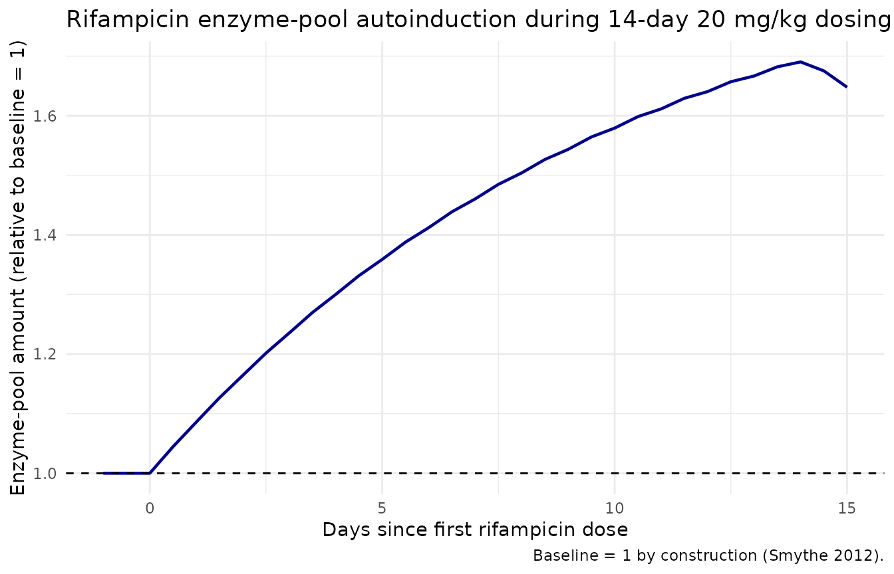

Rifampicin + Multistate Tuberculosis Pharmacometric model (Svensson 2016)
Source:vignettes/articles/Svensson_2016_rifampicin.Rmd
Svensson_2016_rifampicin.RmdModel and source
ui <- rxode2::rxode(readModelDb("Svensson_2016_rifampicin"))
#> ℹ parameter labels from comments will be replaced by 'label()'- Citation: Svensson R. J., Simonsson U. S. H. (2016). Application of the Multistate Tuberculosis Pharmacometric Model in Patients With Rifampicin-Treated Pulmonary Tuberculosis. CPT: Pharmacometrics & Systems Pharmacology 5(5):264-273. doi:10.1002/psp4.12079. PK structure (one-compartment + single transit + enzyme-pool autoinduction + Anderson-Holford NFM allometric scaling) adapted from Smythe et al. (2012) Antimicrob Agents Chemother 56(4):2091-2098 doi:10.1128/AAC.05792-11. MTP disease model structure (three bacterial substates with time-dependent fast-to-slow transfer) from Clewe et al. (2016) J Antimicrob Chemother 71(4):964-974 doi:10.1093/jac/dkv478.
- Description: Combined population PK/PD model for rifampicin in adults with drug-susceptible pulmonary tuberculosis: a one-compartment, single-transit, oral PK model with first-order plasma-concentration-driven autoinduction of clearance via an enzyme-pool turnover (structure from Smythe 2012) linked to the Multistate Tuberculosis Pharmacometric (MTP) three-state bacterial disease model (fast-, slow-, and nonmultiplying Mycobacterium tuberculosis states; structure from Clewe 2016) with rifampicin drug effects as fixed-at-100% on/off inhibition of fast-multiplying bacterial growth plus second-order plasma-concentration-driven death of slow- and nonmultiplying bacteria; all PK parameters and all MTP transfer/growth rates are fixed to the upstream-paper estimates, while the system carrying capacity Bmax (with 152% CV IIV) and the two second-order death rates SDk and NDk are re-estimated against 19 patients from a 1966-1977 Kenyan rifampicin monotherapy trial.
- Article: https://doi.org/10.1002/psp4.12079
- Upstream PK paper (Smythe 2012): https://doi.org/10.1128/AAC.05792-11
- Upstream MTP paper (Clewe 2016): https://doi.org/10.1093/jac/dkv478
Population
The Svensson 2016 PD dataset (Jindani et al. 1980) consists of 19 patients with treatment-naive drug-susceptible pulmonary tuberculosis from Kenya, randomized to rifampicin oral monotherapy at 5 mg/kg (n=3), 10 mg/kg (n=8), or 20 mg/kg (n=8) once daily at 08:00 for 14 days, plus a no-treatment negative-control arm (n=4) used to identify the natural-history disease parameters. Sputum CFU was sampled every 2 days during a 12-hour overnight window (8 PM-8 AM). Individual demographic covariates were not recorded; all patients were assumed HIV-negative and were assigned the Smythe 2012 cohort-mean weight (56 kg) and fat-free mass (45 kg). All patients were assumed to be in stationary-phase infection at trial entry, modelled as time = 150 days since infection.
The structural disease parameters and initial bacterial loads come from the Clewe 2016 in vitro MTP model (Mycobacterium tuberculosis H37Rv strain). The rifampicin PK-enzyme turnover structure and the FFM/WT NFM allometric scaling come from the Smythe 2012 adult-tuberculosis cohort (174 patients, South Africa / Senegal / Benin / Guinea).
The same information is available programmatically via
ui$meta$population (after
ui <- rxode2::rxode(readModelDb("Svensson_2016_rifampicin"))).
Source trace
| Equation / parameter | Value | Source location |
|---|---|---|
lcl CL/F (preinduced, 70 kg) |
10.0 L/h = 240 L/day | Svensson 2016 Table 2; Smythe 2012 Table 3 |
lvc V/F (70 kg) |
86.7 L | Svensson 2016 Table 2; Smythe 2012 Table 3 |
lmtt MTT |
0.713 h = 0.0297 day | Svensson 2016 Table 2; Smythe 2012 Table 3 |
nn_fix Number of transit compartments |
1 | Svensson 2016 Table 2; Smythe 2012 Table 3 |
lemax Emax (enzyme production induction) |
1.04 | Svensson 2016 Table 2; Smythe 2012 Table 3 |
lec50 EC50 |
0.0705 mg/L | Svensson 2016 Table 2; Smythe 2012 Table 3 |
lkenz kENZ |
0.00369 /h = 0.0886 /day | Svensson 2016 Table 2; Smythe 2012 Table 3 |
lfdepot F |
1.00 | Svensson 2016 Table 2 |
e_fat_cl (Ffat)CL/F |
0.311 | Svensson 2016 Table 2; Smythe 2012 Table 3 |
e_fat_vc (Ffat)V/F |
0.188 | Svensson 2016 Table 2; Smythe 2012 Table 3 |
lkg kG (fast-growth) |
0.206 /day | Svensson 2016 Table 2; Clewe 2016 |
lkfn kFN |
8.97e-7 /day | Svensson 2016 Table 2; Clewe 2016 |
lksn kSN |
0.186 /day | Svensson 2016 Table 2; Clewe 2016 |
lksf kSF |
0.0145 /day | Svensson 2016 Table 2; Clewe 2016 |
lkns kNS |
0.00123 /day | Svensson 2016 Table 2; Clewe 2016 |
lkfslin kFSlin |
0.00166 /day^2 | Svensson 2016 Table 2; Clewe 2016 |
lf0 F0 (initial fast) |
4.10 /mL | Svensson 2016 Table 2; Clewe 2016 |
ls0 S0 (initial slow) |
9770 /mL | Svensson 2016 Table 2; Clewe 2016 |
lbmax Bmax (carrying capacity) |
2.61e9 /mL | Svensson 2016 Table 2 (estimated) |
fg_on_off FG inhibition |
1.00 (on/off) | Svensson 2016 Table 2 (fixed at 1) |
lsdk SDk |
0.200 L/mg/day | Svensson 2016 Table 2 (estimated) |
lndk NDk |
0.106 L/mg/day | Svensson 2016 Table 2 (estimated) |
etalbmax IIV Bmax |
152% CV (omega^2 = 1.197) | Svensson 2016 Table 2 |
addSd residual error (combined) |
1.124 | Svensson 2016 Table 2 (e = 1.10 and e_repl = 0.231 folded) |
| MTP ODEs (3 bacterial states with time-dependent kFS) | n/a | Svensson 2016 Methods ‘The Multistate Tuberculosis Pharmacometric model’ |
| PK ODEs (single transit + central + enzyme pool) | n/a | Smythe 2012 Figure 1 and Eqs 1-3 |
| Drug-effect ODE injection | n/a | Svensson 2016 Methods ‘Drug effect’ and Figure 1 |
| Initial conditions: N(0) = 0 | n/a | Standard MTP convention (no nonmultiplying bacteria at infection); Clewe 2016 |
| Treatment-start time t = 150 days | n/a | Svensson 2016 Results paragraph 2 ‘time of entering trial was assumed to 150 days’ |
Virtual cohort
Original observed data are not publicly redistributable. The simulation below uses four single-subject typical-value cohorts (one per treatment arm) matching the Svensson 2016 trial design, with body weight 56 kg and fat-free mass 45 kg.
set.seed(20160517)
n_treatment_days <- 14L
infection_to_treatment_days <- 150 # Svensson 2016 Results paragraph 2
make_cohort <- function(id, dose_mgkg, dose_label,
wt_kg = 56, ffm_kg = 45,
n_doses = n_treatment_days,
t_first_dose = infection_to_treatment_days) {
amt_mg <- dose_mgkg * wt_kg
if (dose_mgkg > 0) {
dose_rows <- data.frame(
id = id,
time = t_first_dose + (0:(n_doses - 1)),
evid = 1L,
amt = amt_mg,
cmt = "depot",
WT = wt_kg,
FFM = ffm_kg,
treatment = dose_label,
stringsAsFactors = FALSE
)
} else {
dose_rows <- NULL
}
# Sparse during 0-149 day warm-up, dense during the 14-day treatment window
# and a 2-day post-treatment tail (the simulation must start at t = 0 for the
# MTP states to evolve from F0 / S0 / N0 to stationary phase before dosing).
warmup_times <- c(0, 50, 100, 130, 145, 148, 149)
treat_times <- seq(t_first_dose,
t_first_dose + n_doses + 1,
by = 0.5)
obs_times <- unique(sort(c(warmup_times, treat_times)))
obs_rows <- data.frame(
id = id,
time = obs_times,
evid = 0L,
amt = 0,
cmt = NA_character_,
WT = wt_kg,
FFM = ffm_kg,
treatment = dose_label,
stringsAsFactors = FALSE
)
dplyr::bind_rows(dose_rows, obs_rows)
}
events <- dplyr::bind_rows(
make_cohort(1L, dose_mgkg = 0, dose_label = "control (0 mg/kg)"),
make_cohort(2L, dose_mgkg = 5, dose_label = "5 mg/kg"),
make_cohort(3L, dose_mgkg = 10, dose_label = "10 mg/kg"),
make_cohort(4L, dose_mgkg = 20, dose_label = "20 mg/kg")
) |>
dplyr::arrange(id, time)
stopifnot(!anyDuplicated(unique(events[, c("id", "time", "evid")])))
knitr::kable(head(events, 8), caption = "First eight rows of the simulation event table.")| id | time | evid | amt | cmt | WT | FFM | treatment |
|---|---|---|---|---|---|---|---|
| 1 | 0 | 0 | 0 | NA | 56 | 45 | control (0 mg/kg) |
| 1 | 50 | 0 | 0 | NA | 56 | 45 | control (0 mg/kg) |
| 1 | 100 | 0 | 0 | NA | 56 | 45 | control (0 mg/kg) |
| 1 | 130 | 0 | 0 | NA | 56 | 45 | control (0 mg/kg) |
| 1 | 145 | 0 | 0 | NA | 56 | 45 | control (0 mg/kg) |
| 1 | 148 | 0 | 0 | NA | 56 | 45 | control (0 mg/kg) |
| 1 | 149 | 0 | 0 | NA | 56 | 45 | control (0 mg/kg) |
| 1 | 150 | 0 | 0 | NA | 56 | 45 | control (0 mg/kg) |
Simulation
mod_full <- rxode2::rxode(readModelDb("Svensson_2016_rifampicin"))
#> ℹ parameter labels from comments will be replaced by 'label()'
# Typical-value simulation (Svensson 2016 Figure 3 shows TYPICAL predictions,
# not VPCs). zeroRe() drops the Bmax IIV so each id produces the typical-value
# trajectory for its dose group.
mod_typ <- mod_full |> rxode2::zeroRe()
sim <- rxode2::rxSolve(
mod_typ,
events = events,
keep = c("treatment", "WT", "FFM")
) |>
as.data.frame()
#> ℹ omega/sigma items treated as zero: 'etalbmax'
#> Warning: multi-subject simulation without without 'omega'Replicate published figures
Figure 3a – log-10 CFU change from baseline by dose
# Replicates Figure 3a of Svensson 2016: typical-value log10-CFU change from
# baseline vs. time since first dose, stratified by daily oral rifampicin dose.
sim_fig3a <- sim |>
dplyr::filter(time >= infection_to_treatment_days - 1) |>
dplyr::mutate(
cfu_total = fast + slow,
log10_cfu = log10(pmax(cfu_total, 1e-3)),
days_since_first_dose = time - infection_to_treatment_days
) |>
dplyr::group_by(id) |>
dplyr::mutate(
log10_cfu_baseline = log10_cfu[which.min(abs(days_since_first_dose))],
delta_log10_cfu = log10_cfu - log10_cfu_baseline
) |>
dplyr::ungroup()
ggplot(sim_fig3a, aes(days_since_first_dose, delta_log10_cfu, color = treatment)) +
geom_line(linewidth = 0.8) +
labs(
x = "Days since first rifampicin dose",
y = "log10(CFU/mL) change from baseline",
color = "Treatment",
title = "Figure 3a -- typical predicted log10-CFU change",
caption = "Replicates Figure 3a of Svensson 2016 (typical-value predictions)."
) +
theme_minimal()
Figure 3b – typical bacterial-state trajectories
# Replicates Figure 3b of Svensson 2016: typical model-predicted bacterial
# numbers for fast-, slow-, and nonmultiplying states, faceted by dose group.
sim_fig3b <- sim |>
dplyr::filter(time >= infection_to_treatment_days - 1) |>
dplyr::mutate(days_since_first_dose = time - infection_to_treatment_days) |>
tidyr::pivot_longer(
cols = c(fast, slow, nonm),
names_to = "state",
values_to = "count"
) |>
dplyr::mutate(state = factor(state,
levels = c("fast", "slow", "nonm"),
labels = c("F (fast)", "S (slow)", "N (nonmultiplying)")))
ggplot(sim_fig3b,
aes(days_since_first_dose, pmax(count, 1e-3), color = state)) +
geom_line(linewidth = 0.7) +
facet_wrap(~treatment, nrow = 1) +
scale_y_log10() +
labs(
x = "Days since first rifampicin dose",
y = "Bacterial number (1/mL, log scale)",
color = "State",
title = "Figure 3b -- typical bacterial-number trajectories",
caption = "Replicates Figure 3b of Svensson 2016."
) +
theme_minimal()
Stationary-phase sanity check at t = 150 days
The negative-control arm receives no rifampicin and should be at stationary phase throughout the 14-day observation window (log10-CFU change from baseline near zero). The Svensson 2016 prediction-corrected VPC (Figure 2a) of the no-drug arm shows the same flat pattern.
fig_ctrl <- sim_fig3a |>
dplyr::filter(treatment == "control (0 mg/kg)") |>
dplyr::summarise(
min_delta = min(delta_log10_cfu),
max_delta = max(delta_log10_cfu),
final_delta = delta_log10_cfu[which.max(days_since_first_dose)]
)
knitr::kable(fig_ctrl,
caption = "Negative-control (0 mg/kg) log10-CFU change from baseline summary.")| min_delta | max_delta | final_delta |
|---|---|---|
| -0.0027542 | 0.0002208 | -0.0027542 |
Rifampicin PK – enzyme-pool autoinduction
A side-check that the Smythe 2012 PK-enzyme turnover layer is wired correctly: in the 20 mg/kg arm, the enzyme pool should approach a new steady state over ~40 days (5 half-lives at kENZ half-life ~8 days). Since this trial is only 14 days long, autoinduction is incomplete at end of treatment but is partially evident.
sim_pk <- sim |>
dplyr::filter(treatment == "20 mg/kg",
time >= infection_to_treatment_days - 1,
time <= infection_to_treatment_days + n_treatment_days + 1) |>
dplyr::mutate(days_since_first_dose = time - infection_to_treatment_days)
ggplot(sim_pk, aes(days_since_first_dose, enz_pool)) +
geom_line(linewidth = 0.8, color = "darkblue") +
geom_hline(yintercept = 1, linetype = "dashed") +
labs(
x = "Days since first rifampicin dose",
y = "Enzyme-pool amount (relative to baseline = 1)",
title = "Rifampicin enzyme-pool autoinduction during 14-day 20 mg/kg dosing",
caption = "Baseline = 1 by construction (Smythe 2012)."
) +
theme_minimal()
Assumptions and deviations
- Body weight and fat-free mass. Individual demographics for the 1966-1977 Jindani sputum cohort were not recorded. All four virtual subjects use WT = 56 kg and FFM = 45 kg, the Smythe 2012 cohort-mean values that Svensson 2016 Methods paragraph ‘Population pharmacokinetic model’ uses for every patient.
-
HIV status. All patients are treated as
HIV-negative. The Smythe 2012 PK model includes a 30% increase in V/F
for HIV-positive patients (V/F-HIV = 29.6% in Smythe 2012 Table 3) but
Svensson 2016 explicitly assumes HIV- negative across the dataset and
does not exercise that covariate. The current model file therefore does
not register
HIV_POSas a covariate. Users who want the full Smythe 2012 PK with HIV adjustment should extract Smythe 2012 separately. -
Sputum sampling compartment. Svensson 2016 chose a
sputum-sample compartment that averages (fast + slow) over the 12-hour
overnight collection window (8 PM-8 AM), reset via NONMEM data-record
events at the start of each collection. The Results paragraph 6 states
that the last-time-point and mid-time-point readouts of (fast + slow) at
the collection time gave ‘similar OFV’ to the sample-compartment method.
nlmixr2lib’s model file uses the instantaneous readout
Sputum_lnCFU <- log(fast + slow + 1e-6)because (a) it is simpler to encode (no compartment-reset events in the data); (b) the paper itself states the difference is negligible; and- the sample-compartment method requires the user to supply per-sampling- interval reset events in their event table, which would be opaque for a library model.
- Residual error model – two components folded into one. Svensson 2016 Table 2 reports two additive-on-log-scale residual components: a per- replicate error (e = 110% CV) and a within-sputum-sample error shared between technical replicates from the same sputum (e_repl = 23.1% CV), implemented via the NONMEM L2 data item. nlmixr2lib has no idiomatic encoding for L2-style nested residuals; the two are folded into a single additive SD on log(CFU/mL) of sqrt(1.10^2 + 0.231^2) = 1.124. Users running estimation against replicate-level CFU data should be aware that the combined SD will be wider than the per-replicate SD reported in the paper.
-
No PK observations. The Svensson 2016 cohort has no
rifampicin plasma concentration measurements; PK is reproduced typically
(no IIV, no residual error) from the upstream Smythe 2012 model via the
‘population PK parameter’ approach (Zhang et al. 2003). The model file
does not assign residual error to
Ccbecause plasma concentration is an internal model state, not an observation; users wishing to estimate or simulate PK uncertainty should consult Smythe 2012 directly. - Initial bacterial conditions and treatment-start time. F(0) = 4.10/mL, S(0) = 9770/mL, N(0) = 0/mL at infection (t = 0 days); rifampicin treatment is assumed to begin at t = 150 days because the in vitro Clewe 2016 model predicts stationary phase by ~130 days. The simulation must run from t = 0 for the bacterial states to evolve naturally to stationary phase before dosing.
-
Mechanism-specific compartment names. The MTP
disease states use the paper-named compartments
fast,slow,nonm, andenz_poolplus the paper-named observationSputum_lnCFU. None of these are in the canonical compartment / observation-variable register;checkModelConventions()emits warnings (not errors) for them. The compartment names match the source paper’s variable letters (F, S, N) and the in vitro Clewe 2016 MTP framework; future MTP-style extractions (Clewe 2016 in vitro, Chen 2014 mouse, etc.) will use the same names. -
External-validation trials (Svensson 2016 Figure 4) not
reproduced here. The Sirgel 2005, Diacon 2007, and Rustomjee
2008 cohorts were used only to confirm out-of-sample predictive
performance and do not change the parameter estimates; they can be
simulated by replacing the
dose_mgkg/n_dosesparameters in themake_cohort()helper.